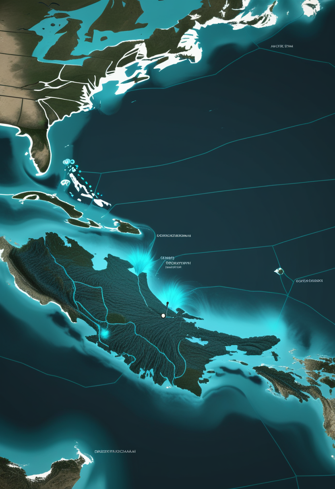
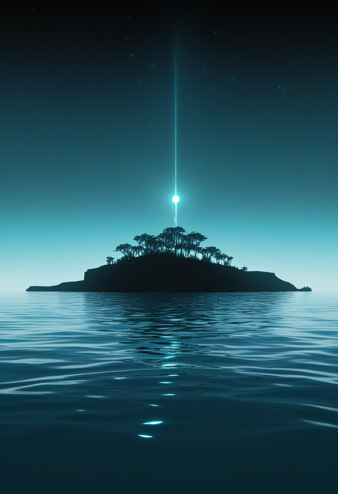
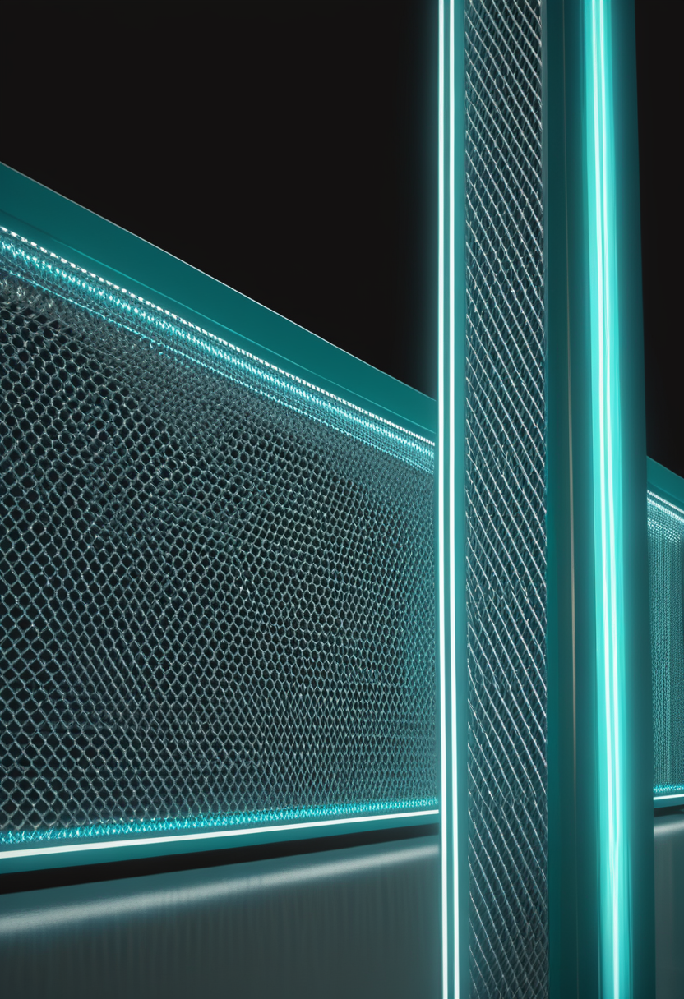
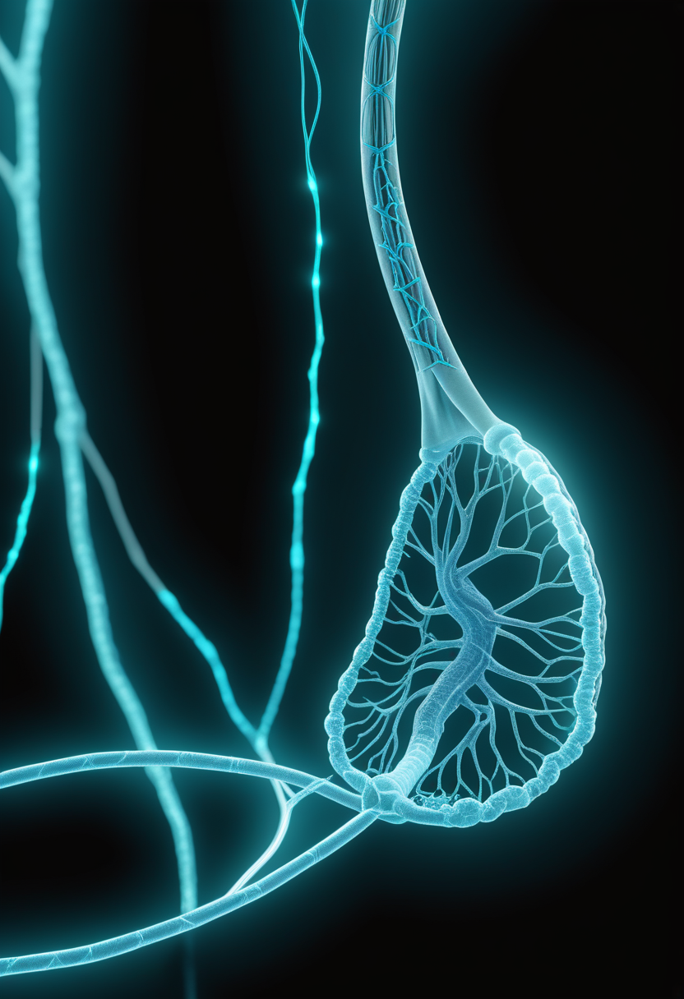
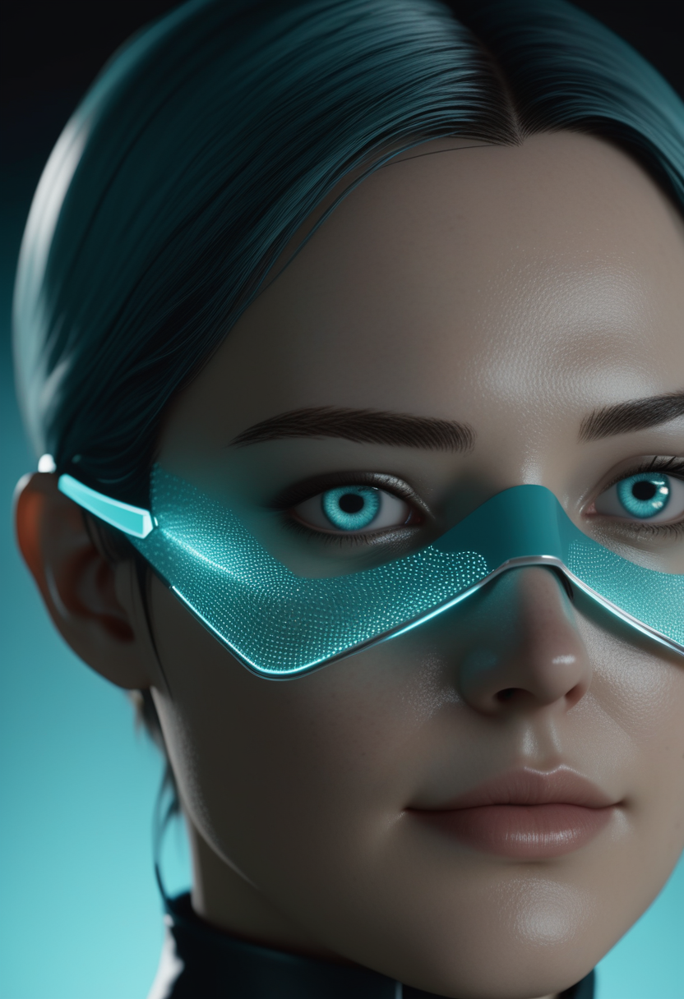
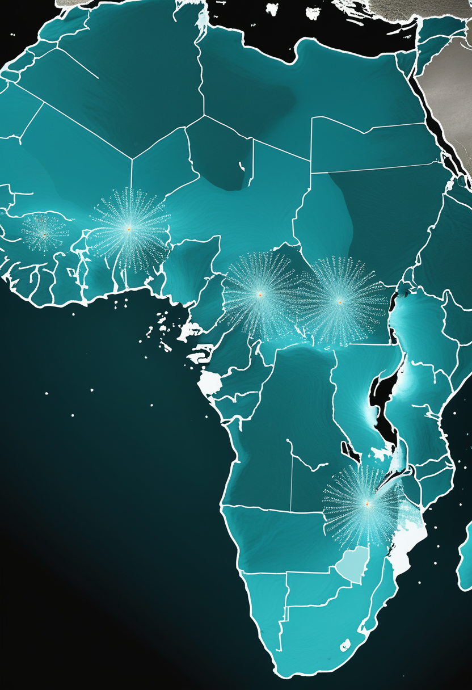
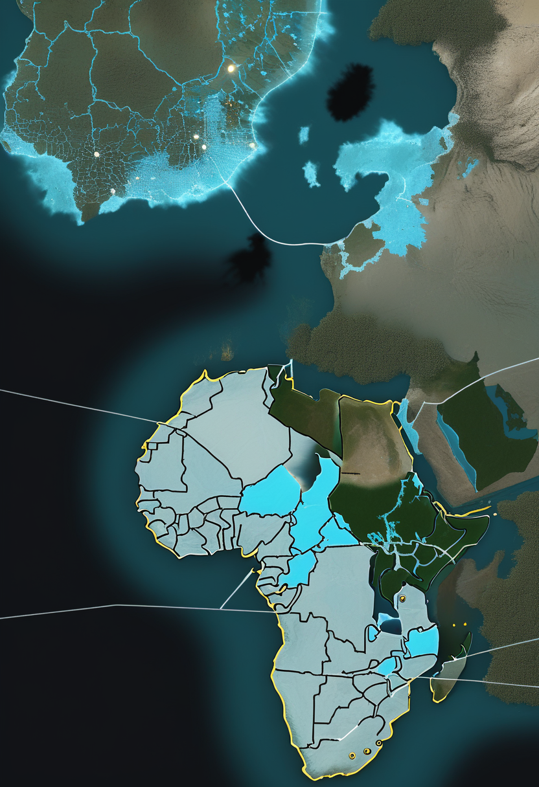
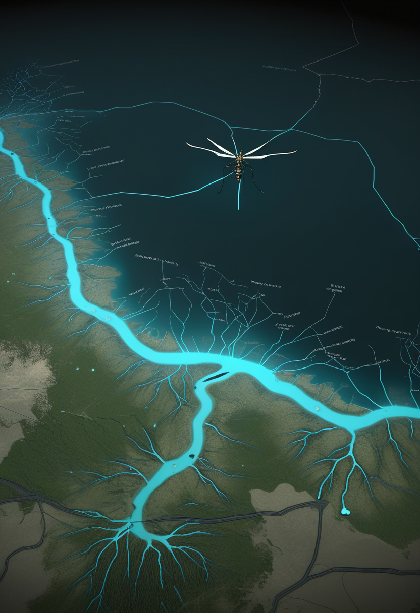

マダガスカルのmpoxが2,000例・死者7名に達し、DRCのエボラ（676例・PHEIC）とコレラ（26,750例）が重なる複合危機の中で、WHO「One Response」が6〜11月の統合対応計画を始動した。その同じ週に、NeuralinkとSynchronがBCI量産・承認競争を加速させ、LHCbのバリオン実験が「なぜ宇宙は物質で満ちているのか」という問いに2.5%の数値根拠を加えた。緊急と前進は、今日も同じ時間の中にある。

2025年12月18日〜2026年6月9日の累計で、マダガスカルのmpox確定例が2,000件・死者7名に達した。陸路のない島嶼国でありながら渡航・輸送経路を通じた感染拡大が続き、WHOが越境リスクを継続監視している。同時期のアフリカではエボラ（DRC・676例・PHEIC継続）とコレラ（DRC・26,750例・783死者）も進行しており、三重感染症危機がWHOの対応能力を圧迫している。WHOは6〜11月を対象とした「One Response」統合計画を始動し、三疾患の資金・人員・物資を単一フレームワークで一元管理する体制を構築しつつある。

Scholar Rockのアピテグロマブ（ミオスタチン阻害薬、SMAタイプ2・3）のFDA PDUFA date（審査期限）は2026年9月30日に確定済み。新情報として、欧州医薬品庁（EMA）のMAA（市販承認申請）審査も並行して進行中で、EU承認はH2 2026が見込まれる（要確認）。SAPPHIRE第3相試験でHFMSE +1.8点の統計的に有意な改善を達成しており、承認されれば「SMN標的＋ミオスタチン阻害」の世界初の2層レジメンが実現する。製造施設（Catalent/Novo Nordisk）の問題は解決済みで、薬剤本体の有効性・安全性への懸念はない。
NMD670はスプライシング修正（ASO・小分子）とは異なる機序を持つ新規低分子薬で、Phase II臨床試験が進行中。歩行可能な成人SMA患者（18〜75歳）を対象に、6分間歩行テスト（6MWT）による運動機能改善を主要評価指標としている。既存の「SMN増量」アプローチとは独立した第三のメカニズムとして注目されており、試験完了は2026年内が見込まれる（要確認）。アピテグロマブとは異なる患者層・機序をカバーし、SMA治療の選択肢拡充に寄与すると期待される。
タルデフグロベプ アルファは、ヌシネルセン・リスジプラム・オナセムノジェン（Zolgensma）を投与中または投与歴のある患者を対象に、プラセボ対照でアジュバント療法の有効性・安全性を評価する臨床試験が進行中。「神経を守る」から「筋肉機能を取り戻す」へという治療パラダイムの転換を体現する薬剤として、SMAコミュニティから注目を集めている。既存のSMN標的療法を補完しながら筋萎縮を抑える戦略は、長期的な生活の質（QOL）改善を最終目標とする。
PDUFA まで107日。EMA審査も並行し、年内にアピテグロマブが二大市場で動き出す可能性がある。NMD670とタルデフグロベプ アルファが後続を形成し、「SMN増量だけに頼らない」次世代SMA治療の選択肢が拡充しつつある。
Neuralinkは2026年内に高量産体制と「ほぼ完全自動化された手術」への移行を計画している。新設計では電極スレッドが硬膜（脳保護膜）を貫通するため、従来必要だった硬膜除去が不要となり侵襲性が大幅に低下する見込み。現在21名以上のNeuralnauts（患者参加者）が神経インターフェースを継続使用し、ロボットアーム制御やALS患者の高速文字入力も達成済み。商用化の現実的見通しは2028〜2030年で、Series E 6.5億ドル調達済み。

Synchronは初の埋め込み型BCI医療機器FDA承認（PMA）に向けた枢要試験を2026年内に開始する計画を発表した。2025年11月に2億ドルのシリーズD資金調達が完了し、試験準備が整っている。Stentrode（静脈経由設置・開頭不要）はすでに米国・豪州の10名の患者に埋め込まれており、Apple Vision Pro / iPhoneとのネイティブ統合（COMMAND試験）で安全性エンドポイントを達成済みだ。Neuralinkの高侵襲・高解像度路線とは対照的な「低侵襲・量産可能」な設計で、2026年後半のBCI承認競争を加速する。

Tobiiは2026年2月19日に年次研究報告書をリリースし、視線追跡技術の最新科学的活用事例を公開した。ALS・脳性麻痺患者など手や声を使えない人がアイコントロールでデジタルデバイスを操作できる支援技術の進展が多数報告されている。医療・研究・人間工学の各分野での応用が拡大しており、BCIとの統合という方向性も視野に入りつつある。Neuralinkの侵襲型、Synchronの低侵襲型、Tobiiの非侵襲型が「コスト・精度・リスク」の異なるトレードオフで2026年を並走している。
Neuralink（自動手術・量産）とSynchron（低侵襲・PMA秒読み）が異なるアプローチで承認競争に入り、Tobiiの視線入力が非侵襲層を補完 ── BCIの三層が2026年後半に向けて同時進行している。

2025年12月18日〜2026年6月9日の累計でマダガスカルのmpox確定例が2,000件・死者7名に達した。陸路のない島嶼国でありながら感染拡大が続き、渡航・輸送経路を通じた越境リスクをWHOが継続監視している。同時期のアフリカではエボラ（DRC・676例・PHEIC）とコレラ（DRC・26,750例・783死者）も進行しており、三重感染症危機が資源配分を圧迫している。WHOは「One Response」計画（6〜11月）を始動し、三疾患を横断する単一フレームワークで資金・人員・物資を一元管理する体制を構築しつつある。

2026年6月10日時点のDRCエボラ確定例は676例・死亡136名（6/14号時点）。WHO PHEICは継続中で、接触追跡率は目標90%に対して約45%にとどまる。WHO「One Response」計画は、エボラ・mpox・コレラの三疾患を横断する統合フレームワークとして6〜11月を対象に設計された。ICN（国際看護師会）が指摘したPPEと検査キット不足の問題は依然として未解決であり、現場への「ラストマイル」物資配達と人員配置が封じ込めの成否を分ける。承認ワクチン・特異的治療薬ともに存在しないPHEIC下での統合対応が続く。

2026年6月10日、西オーストラリア州の地方保健当局がマリーバレー脳炎（Murray Valley encephalitis: MVE）による死亡例1件を報告した。MVEはクリック蚊（Culex属）が媒介するフラビウイルス感染症で、豪州内陸部の洪水後に流行する傾向がある。NaTHNaC（英国国立渡航健康センター）が旅行者への注意を呼びかけている。アフリカの三重感染症危機とは別の文脈で、豪州内陸部で蚊媒介ウイルスが命を奪ったことは、感染症の地理的多様性と気候変動との連動を改めて示している。
mpox 2,000例・エボラ676例・コレラ26,750例が同時進行するアフリカの三重危機に、WHO「One Response」が統合管理で臨む ── 現場のPPEと人員不足が根本的な課題として残っている。
NASAはチャンドラX線観測機とジェイムズ・ウェッブ宇宙望遠鏡（JWST）の合成データにより、小マゼラン雲外縁部の若い星団NGC 602（通称「宇宙のリース」）を捉えた。高温の幼い恒星からのX線（チャンドラ）と周辺ガス・塵の赤外線像（JWST）を重ね合わせた複合観測で、恒星の誕生と死が一つの画角に収まる。NGC 602の恒星形成環境は数十億年前の初期宇宙を模倣しており、宇宙の進化解明に新たな窓を提供する。
ESAのEuclid宇宙望遠鏡が2026年6月24日に「クイックデータリリース2（Q2）」を公開予定。銀河バルジ（天の川中心部の膨らみ）4.8平方度を光学VISカメラで約24時間連続撮像したデータで、前例のない深度と解像度を提供する。NASAのローマン宇宙望遠鏡（2027年開始予定の銀河バルジ重力マイクロレンズ惑星サーベイ）の基準フレームとしても機能する設計。前回Q1（2025年3月）に続く第2弾で、ダークマター・ダークエネルギー・系外惑星研究への貢献が期待される。
CERNのLHCb実験が、バリオン（陽子・中性子など通常物質を構成する重粒子）の崩壊においてCP対称性の破れを初めて観測した。物質と反物質のバリオン崩壊率の間に約2.5%の相対差が確認された。6/14号で報告した「LHC Run 3完了・バリオンCP非保存の初観測」と同一事象だが、今号はその数値根拠（2.5%差）を初めて明示する。6/13号で報告した「チャーミングペンギン崩壊（Bメソン系）の4σ逸脱」とは独立した粒子系での観測であり、標準モデルを超える「新物理」を複数経路から示唆する結果が蓄積しつつある。
「宇宙のリース」NGC 602がX線と赤外線で初期宇宙を再演し、Euclid Q2（6/24）が天の川バルジを開き、LHCbが物質宇宙の謎に2.5%の数値根拠を与えた ── 今週は、宇宙の「なぜ」に前進する週となった。
MedicalXpress（2026年5月）とEurekAlert（2026年5月）の報告によると、個人の脳・身体をモデル化したデジタルツインは薬剤反応・疾患進行・神経刺激応答のシミュレーションが可能な段階に達している。精神科薬の個別最適化や認知症の早期予測への応用が視野に入る一方、研究者は「SFのマインドクローンとは程遠い」とも強調する。「段階的な医療ツール化」が最も現実に近い見通しであり、5〜10年内の部分的実用化と「30〜40年先の全脳エミュレーション」の間に技術と倫理の準備期間がある。
査読論文（PMC9700595）は、仮想環境内で意識的経験能力を持つ可能性のあるエミュレーテッドマインドの創出に伴う倫理的責任を分析している。エミュレーションの「終了」（死に相当する処理）の道徳的含意、創造者の法的責任、および規制の空白が主な論点。前号（6/14号）が扱った「認知データの外部流出・雇用差別」とは異なり、今号は「作られた意識をシャットダウンすることの是非」という一段深い問いに踏み込む。技術が先行し法制度が後追いする構造は全脳エミュレーション倫理でも変わらない。
JETIR誌掲載論文（JETIR2509262）は、ニューラルネットワークと脳の計算基盤を統合した「デジタル不死」の概念を整理し、記憶・人格の永続化と法的人格としての承認可能性を論じている。「自分の精神コピーを誰が所有できるか」「死後のデータ継承は相続財産か」という問いが法的・倫理的争点として浮上しつつある。前号（6/14号）が扱った「認知データ所有権」の延長線上に、「意識そのものの所有権」という未踏の問いが立っている。
脳ツインが「医療ツール」として段階的に実体化する一方、「意識のシャットダウンの是非」と「デジタル不死の所有権」という問いが倫理の最前線に立ちはだかる ── 人間のデジタル化が進むほど、答えを持たない問いが積み重なる。
今日の世界は、マダガスカルの島で2,000人が数えられ、DRCの676例と26,750例のコレラが同じ地図に載り、WHOが一つの枠組みで三つの危機に向き合おうとしていた。その同じ週に、電極が自動で脳に届くようになり、静脈から脳へのBCIが承認の正面玄関に立ち、天の川の中心部が9日後に開かれる。LHCが止まったあとも、バリオンの崩壊が2.5%の差で宇宙の謎を語り続けている。人間のデジタル双子が医療ツールになろうとする今、誰かが「それを止めることは死か？」と問い始めた。
明日への短い便り。今日も世界は、問いながら回っていました。おやすみなさい。